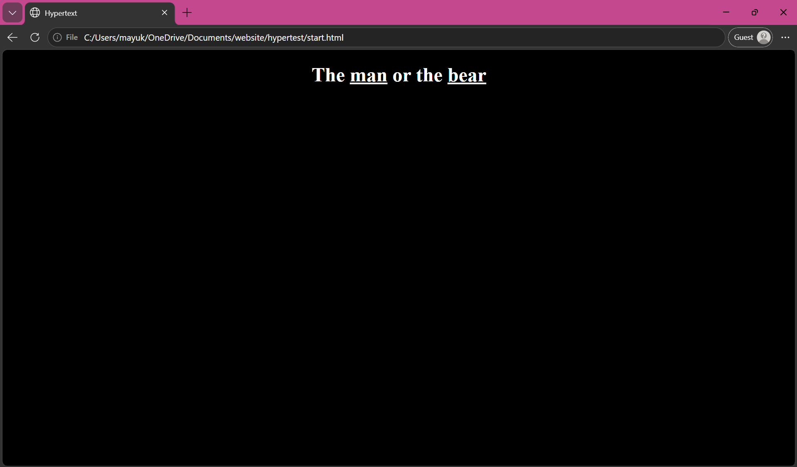

"The Man or The Bear" explores the infamous online debate of 2026 in which many women were promted with the question "Would you choose a man or a bear if you were lost in the woods?" This hypertext experience explores the feeling of being alone when placed in a forest with a predator. Black background, simple, plain text with no indication of what will happen next. The point of "The Man or The Bear" is not a statement on "all men", but rather:
Is falling victim to a man the same as falling victim to a bear?